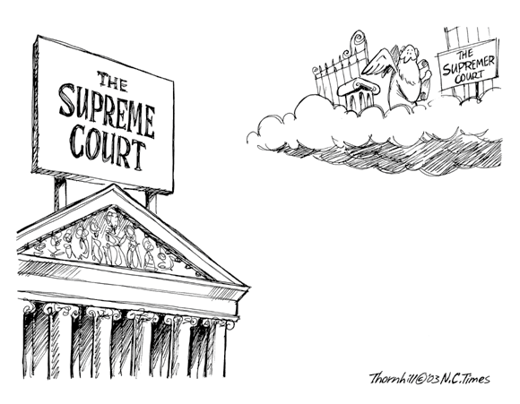

2003 letters
North County Times January 29, 2003
No sympathy for departing soldiers
I have no sympathy for soldiers being deployed to the Middle East. They
will not be traveling thousands of
miles to defend us from any aggression.
They will be an invading army, led by a nonelected commander-in-chief
and a Big Oil oligarchy bent on
restoring American imperialism at its worst. They will do this because
Iraq is weak and has no defense
against the $330 billion war machine. They also do this for the oil
under Iraqi ground. The other reasons
given by our lying government are just that lies. Our
soldiers believe these lies? They should know
better. All of us should know better.
This war will be the end of any sense of morality we have left as a
nation.
Evil this blatantly monstrous will turn our own souls. The obvious
greed and the needless death will corrupt
us and our children as surely as the rain of bombs will once again
stain Iraq with blood. Our country's spirit
will wither, as war becomes peace, lies become truth.
I am not going to stand for it. Be forewarned. You will see us in the
streets.
ERIC PARISH
Vista
North County Times January 30, 2003
Soldiers do what they are told to do
This is in response to Eric Parish's Jan. 29 letter, "No sympathy for
departing soldiers."
I realize that it was probably written before the president's State of
the Union address on Jan. 28,
but I'm doubting that watching it would have helped Parish to avoid the
errors and inaccuracies
that plague his letter.
First of all, as any soldier, sailor, airman, or Marine can tell him,
our troops are not in the Middle
East because of what they believe, they're there because that's what
they were told to do. That's
the way it works in the military. It doesn't matter what we believe ‹
we are sworn and paid to obey
the orders of the commander in chief and the commissioned officers that
lead us.
Secondly, his government has not been lying to him. As of late, the
government has only been
reiterating the findings of the U.N. inspection team.
If he doesn't believe what the inspection team is saying, then I
suspect that the only person he'll
believe is himself. To that, I suggest that he go take a look around
Iraq for himself. I'm sure that
Saddam would extend to him the same great courtesy that he has shown
his own citizens and even
his own family.
SGT. WARREN THOMPSON
Oceanside
North County Times February 2, 2003
Military doing their best to serve their country
I'm writing in response to Eric Parish's Jan. 29 letter. Some of what
he writes I don't disagree with: Mr.
Bush's cowboy attitude that it is somehow the American people's job to
police the rest of the world.
However, Mr. Parish's words about our soldiers are simply unacceptable.
These are honorable men and women who joined our military in good
faith. Does he not realize that a vast
majority of the people who enlist do so to earn money toward a college
education under the G.I. Bill, or to
qualify for the VA loan to be able to purchase a home, to learn a trade
or just to see the world?
Each one of these people is someone's son/daughter, sister/brother and
possibly a spouse/parent to the
family that they had to leave behind. They make great personal
sacrifices to do their duty to our country
and we need to give them our respect and support. Do you think these
men and women would choose for
this conflict to be happening on their watch? I don't think so.
So if Mr. Parish wants to rant about Mr. Bush and his energy company
cronies, go ahead.
However, show some respect for the men and women of the armed forces
whose lives are on the line
doing their best to serve their country.
TERI GRAHAM
Ramona
North County Times February 5, 2003
Soldiers are just following orders
I was shocked to read the letter printed Jan. 29 by Eric Parish headed,
"No sympathy for departing
solders." Doesn't he know they are following orders? Does he really
think they want to leave their families
and loved ones? Regardless of their personal opinions, they are
fulfilling their duty to serve their country as
honorable men and women.
I personally am opposed to war. However, I'm very grateful to our young
men and women in the military
who risk their lives for all of us. They deserve to know that we
appreciate them and are proud of them. We
should be doing more to help the young families they must leave at
home.
PAT KOUNS
Carlsbad
North County Times February 7, 2003
Servicemen not responsible for impending war
I was particularly inflamed by a letter I read Jan. 29. The letter was
from a Mr. Eric Parish and was
headlined "No sympathy for departing soldiers." First of all, I
appreciate Mr. Parish's use of his
constitutional right to disagree publicly with our government. I don't
agree with our impending invasion of
Iraq either, but the issue becomes far more personal for me.
My husband is in the Navy and is currently deployed to the Middle East.
The issue in Mr. Parish's letter
that inflamed me was his clearly misplaced lack of sympathy. Our
departing soldiers were given little notice
and no choice regarding their departure.
One could rebut that these men and women made a choice to enter the
military, but that should not make
them personally responsible for the decisions of the president. Many of
our departing men and women
disagree with this conflict but have accepted their duty with honor.
The only alternative to deployment for these men and women is a
dishonorable discharge for disobeying a
direct order. To say that they are undeserving of our sympathy and
support is to devalue the lives that will
surely be lost if this war does take place.
No matter how we feel about the choices of our country's government, we
should not misplace our anger
and lack of sympathy.
MELISSA MILLER
Scripps Ranch
North County Times February 11, 2003
Support for troops
I am writing to say that we need to support our troops. We all may
oppose a war, or we all may support it.
No matter, we all have to support our fathers, mothers, brothers,
sisters, husbands, wives and children
who are putting their lives on the line for our country. I am deeply
appalled by Eric Parish's Jan. 29 letter.
Shame on North County Times for publishing it.
How dare he. The love of my life is on one of the ships that left San
Diego. He is not there because
someone said, hey let's go to war, and he stood up and said I want to
go. He devoted himself to protecting
the freedom and welfare of our country. He was ordered to go, not asked
if he wanted to. And he left,
head held high knowing what he is doing is for the protection of our
children and grandchildren, as well as
Mr. Parish's and all of America. I am very proud of my future husband,
and respect him and all others in
the military for keeping us safe. Sad that people like Eric Parish have
to take the freedom our soldiers fight
for and use it against them. Myself, I say semper fi, my love.
We are here for you. Gods speed to all of you.
DENISE WALLACE
Vista
North County Times January 20, 2003
Vets' group revived
J. Stryker Meyer
Commentary
A group of North County combat veterans has begun what they hope will
become a trend.
On Wednesday night a North County chapter of the Military Order of the
Purple Heart met in the
Oceanside Elks Lodge with the mission to increase its membership and
visibility in the community.
Jim Evans, also a member of the Pearl Harbor Survivors, said veterans
have to make their voices
heard, "especially as our country apparently is gearing up to go to war
again. ... Contrary to what
some folks said, I've never seen a good war."
As the saber-rattling increases from the White House and the
Pentagon, Evans and his fellow veterans said they're beginning a
membership drive in the Military Order of the Purple Heart to
provide camaraderie between veterans wounded in combat, to
gather more men and women to share their combat experiences
with today's noncombatants and to support Marine units from
Camp Pendleton deployed to combat zones.
Perhaps Evans and his troops will become more visible soon. During a
recent Vista Unified School
District board meeting, Trustee Jim Gibson suggested that VUSD break
with its stodgy tradition of
naming schools after the streets where they are built, and name them
after American military
heroes. He mentioned Gen. Henry Knox the crafty artilleryman of
Revolutionary War fame, or
famous Marines who dedicated their lives to fighting for our country's
freedom, which allows
public entities to make poorly thought-out decisions.
Gibson said that naming schools after heroes would spark student
discussion and history lessons in
the future.
But the board rejected his motion by 3-2 vote, choosing to maintain its
glorious tradition of naming
schools after streets. If Evans and his troops had known about the
meeting and appeared before
this erratic governing body, the vote might have been different.
Evans said the North County chapter of the Military Order of the Purple
Heart had been quietly
dying through inertia. Today, with membership at 37, "Part of our job
will be education, not only
about war, but what the Purple Heart stands for."
The Purple Heart's history goes back to Gen. George Washington, who
established the Badge of
Military Merit 0n Aug. 7, 1782, to reward acts of individual gallantry
by the nation's fighting men.
The award consisted of a purple cloth heart. Only three men received
the award during the
Revolutionary War.
The award slipped into oblivion until 1932, when Gen. Douglas MacArthur
reinstituted it as the
now-familiar Purple Heart, given to those wounded in World War I or who
possessed a
Meritorious Service Citation Certificate.
The revived medal is made of metal instead of perishable cloth, in the
shape of a rich purple heart
bordered with gold, with a bust of George Washington in the center and
the Washington coat of
arms at the top. An order expanded the Purple Heart award to all
services in 1943 during World
War II.
Any recipient of the Purple Heart who wants to join can call Jim Evans
at (760) 727-9027.
J. Stryker Meyer is a North County Times staff writer. E-mail:
jmeyer@nctimes.com. His
Veterans' Corner column will appear occasionally in the North County
Times.
1/20/03
North County Times February 15, 2003
His ideas do little to educate Vista students
I see that J. Stryker Meyer has a bee in his bonnet about the Vista
Unified School District¹s policy of
naming schools for the street where they were built (³Vets¹
group revived,² Jan. 20).
We have a real noisy trustee here in Vista, Jim Gibson, who can always
be counted on for great ideas as
long as they get his name in the paper and have nothing to do with the
education of our Vista students. It
seems that Mr. Gibson thinks we should name our schools for American
military heroes. I nominate Gen.
George A. Custer and Lt. William Calley. We can include later any of
the cruise missile-launching
button-pushers about to free all that Iraqi oil for our SUVs. To make
it simple, how about General
Dynamics High?
We can get our fill of old men with their tired dreams of military
glory on Veterans Day. Save Martin
Luther King¹s day for dreams of peace.
ERIC PARISH
Vista
North County Times February 6, 2003
Letter from a young Marine
Cpl. John P. Hoellwarth
Commentary
The American flag flies in very few places where you can't order a
pizza. The USS Boxer, under way in the
Pacific, is one of them.
The Boxer and the Marines and sailors on it are the embodiment of our
president's commitment to the security of our country. It is the honor
of
every Marine and sailor aboard this ship to have picked up the phone
when our nation called.
I must admit, traveling at 14 knots toward the call of duty was never
my
idea of war. I suppose it lacks the intense feeling of gravity I
figured would
accompany a deployment of this magnitude. That is to say, I'm not as
nervous about going to the Middle East as a certain dictator should be
about having me there.
As I type this, the ship rumbles beneath me and the ocean rolls pens
back and forth across my desk. The
constant reminders that there is no solid ground beneath me makes me
wonder if I have any in my life at all.
Aboard the Boxer, we are all slaves to the whims of the ocean and the
call of duty. Neither one is calm
enough for me to believe I'm in control.
Each of us has exchanged control of our lives for healthy amounts of
faith in our country and our president.
The funny thing about control is that when you have it, exercising it
consumes every facet of your life. But
when you realize you never really had it in the first place, you're
free: like the first time you release your grip
on the rail and lift your hands to heaven as the roller coaster takes a
dip.
During chow aboard ship, my fellow Marines' eyes scan the room. They
wonder which faces, if any, won't
be there on the return trip. It's the feeling of riding the roller
coaster with both hands in the air.
I have never been so close to the possibility of fighting a war in a
foreign land. I have never been so close
to the prospect of killing or being killed. And because I know I can't
control duty's call any more than I can
control the ocean, I can release my grip on the rail. And I've never
felt so alive.
It's indescribably exhilarating. I never saw this coming when I was all
but paralyzed with fear and
uncertainty. I never knew this was the reward for those who push
through their apprehension.
I am sure now that only those who let go of the rail could ever
understand the esoteric motivation inherent
in Sgt. Major Dan Daley's words when he inspired his Marines in the
midst of combat during World War I
by asking them if they wanted to live forever.
He wasn't asking them a question at all. He was bringing them to the
realization that no matter what their
answer to the question was, they weren't in control of it.
"Let go of the rail," he was telling them, "and know what it means to
be alive, if only for a while." He was
giving his Marines the same opportunity to drink deeply from the cup of
life that the president has given to
every Marine and sailor aboard this ship, each of whom must ask
themselves the following question: If this
roller coaster derails, will I have wanted to ride it with my eyes
shut, clutching the rail? Or with my hands in
the air, screaming aloud how grand it's been to be so young and so
alive?
Cpl. John P. Hoellwarth of Antioch is a combat correspondent with 1st
Marine Division.
2/6/03
North County Times February 24, 2003
Services offer break from desert monotony
DARRIN MORTENSON
Staff Writer
LIVING SUPPORT AREA FIVE, Kuwait ---- Several men wept, others sat
silent as Navy chaplain Bill
Devine, straining to be heard above the din of helicopters and other
military machinery, asked God to
deliver them from war.
"Protect us from violence, keep us safe from weapons
of hate," Devine told 75 Marines gathered Sunday in a
dusty tent at the 5th Marine Regiment's forward
command center some 25 miles from the Iraqi border.
Many of the Marines were members of the Camp
Pendleton-based 5th Regiment's three infantry
battalions, which are expected to be among the first
troops to cross into Iraq if and when President George
W. Bush gives the order for war.
The battalions are spread out over several square miles
where Marines live in the open desert in tactical
assembly areas forward of this tent city, which the
Marines euphemistically call a "Living Support Area."
For many, Sunday was the first time since they arrived
in Kuwait in January or early February that they have
taken a day's break from war preparations and have
been pulled back from the front lines to go to "the rear"
for the Catholic Mass.
The weight of their mission and the crush of activity
around them lent a serious tone to Sunday's small
candlelight service, one of a dozen or so services held
for numerous faiths throughout the day.
"Since we got out here, we've had a chance to do a lot
of thinking. We think about things that we love very
much," Devine said, revealing a street-tough Bostonian
accent.
"We pray for our families back home. We pray for our
wives, we pray for our children, we pray for our girlfriends and those
special friends we left behind. We
know that they are worried about us. Let them know, Lord, that we are
OK and let them know that we
think of them often," he said. "Lord, hear our prayer."
One Marine sat up straight, leaning forward to hear the chaplain's
message above the flapping of a tent
door and the squeaking and whining of a squadron of amphibious assault
vehicles revving up outside.
Around him, dozens of Marines sat at plastic tables and chairs with
pistols holstered, and rifles slung,
except for those who gripped their weapon by the barrel, resting the
stock on the dusty plywood floor.
At times, a few Marines broke down, silently sobbing into their hands,
while others stared off at dark
corners or out open tent doors, lost in thought or prayer.
As the tent flaps opened for more Marines, beams of light shot across
the dust-filled room, briefly flooding
the floor and randomly spotlighting individual Marines.
"We pray for peace, for peace without war, that you would let us have
it," Devine said. "And if not, then let
us have the strength to do what we must so that other people will have
peace and justice. Lord, hear our
prayer."
As Mass concluded, the Marines knelt in the dust for a final prayer,
their shaven heads bowed, their hands
clasped tightly around the barrels of their weapons.
"Know that when you walk out this door, the Lord walks with you,"
Devine said before leading the final
hymn: "Let there be peace on earth."
The service over, the Marines silently scooted across the wooden floor,
boot-toe to bootheel as they filed
towards the door. Devine darted off to hear a young Marine's confession
behind a stack of chairs.
"This isn't really any different than any other Sunday, as far as these
Marines wanting to worship and pray,"
said Lt. Col. Looney, who did not give his first name. "But considering
where they are, they know a lot bad
things can happen to them. So they're a little more focused today."
2/24/03
North County Times March 4, 2003
Whipping us into a blood lust
Could you please spare us from any more insipid "Yippee we're off to
war, boys!" military propaganda
("Letter from a young Marine," Feb. 6). That also goes for the prayer
from the Marine chaplain in Kuwait
on the front page Feb. 24, "Keep us safe from weapons of hate." They
are both revolting aspects of our
country's full-blown insanity.
We already know that these young men have been whipped into a frenzy of
blood lust. It is part of the
training, similar to how the media whip up the current public blood
lust. We also know Bush and his
cronies have decided to use these young men and women as hired killers
in their unholy crusade of greed
and conquest.
It will be a tragedy if one of these men or women dies during our
jackbooted blitzkrieg of Iraq. The greater
tragedy will be the coming deaths of thousands of uncounted,
uncared-about Iraqis, guilty of living on top
of oil. Shame on us.
Jesus wept.
ERIC PARISH
Vista
North County Times February 25, 2003
We should invade Iraq without U.N. approval
War or peace? The fateful question hangs in the mind of every American.
We are doubtful, yet we should
not be. We are losing that fierce fire of patriotism ignited by the
attacks of Sept. 11.
Some say we need permission to attack, do we? Our government should
realize that the resolutions of the
United Nations should not determine our direction.
Our attitude toward resolutions should be that which the Declaration of
Independence invoked, "a
decent respect for the opinions of mankind," not a slavish following.
We do not need permission to attack a ruler of a nation who, like a
weed, will sow seeds of terror that will
spread, if not uprooted now. There is a point of no return. Let us not
wait until then.
Our president embodies the American spirit and resolve, standing for
the freedom of mankind granted by
God. It is our duty to move that glorious cause forward.
Such has been the lot of Americans in history, to stand in the gap, to
stand alone and to stand with such
resolve that the enemies of freedom tremble. Let others shirk and fail.
Fellow citizens will you rise up and take your place in the
annals of history? Will we live up to our name
and pay the price for our children that our fathers paid for us? It is
our duty and we must.
FRANCIS PEDRAZA
age 13
Oceanside
North County Times March 10 ,2003
Youth demonstrates his wisdom
Francis Pedraza's Feb. 25 letter demonstrates wisdom and maturity
beyond the age of 13. After 17 U.N.
resolutions over 10 years and mindless drivel from the usual Hollywood
sycophants and friends of Bill and
Hillary, the time for action is now. With allies like France, who needs
enemies?
Thank you, George Bush, for having the courage and resolve to make the
right decisions for our country's
safety. There are millions of us who have weighed the facts and support
Bush completely.
Isn't it interesting that the same people who opposed the Gulf War and
any censure of Bill Clinton for lying
as he looked into our faces about sexual relations with a college
intern still continue to claim the moral high
ground? Where was their outrage over our servicemen who were killed on
the USS Cole, in barracks in
Saudi Arabia, in the streets of Mogadishu in Somalia?
These are the people they would have us trust to do the right thing.
Our compassionate brethren write
letters like Eric Parish, who has no sympathy for our servicemen who
are fighting to protect the very bile he
articulates.
Thank you, Mr. and Mrs. Pedraza, for doing a great job raising a young
person like Francis, who is smart
enough to know the difference.
I'm proud of all of you.
RICHARD LEON
Olivenhain
North County Times March 12, 2003
Protesters show their hate for our military
It's obvious by his letter of March 4 that Eric Parish hates our
military. He seems to be part of the
brainwashed anti-America crowd that makes up a vocal but extremely tiny
segment of our society. They
huff and puff about a 12-year rush to war.
They cry and scream about us being unilateral, when the only nation
acting unilaterally is France. They
moan and groan that we can't fight al-Qaida and Iraq at the same time,
yet the capture of Khalid Shaikh
Mohammed while we amass troops in the Gulf is proof we can do both.
They protest Bush launching
cruise missiles at Iraq, yet they were silent when Clinton bombed the
daylights out of Iraq in 1998.
The North County Times has done a wonderful job bringing us coverage of
our brave men stationed
overseas. I also enjoy reading how much our boys dislike the damn
liberals too.
My only wish is that in place of the chickens tied to the roofs of
their vehicles to provide early warning for
chemical weapons, we could put the liberal America-haters on the roof
instead. Since, according to the
appeasers, Saddam doesn't have chemical weapons, there is nothing to
fear, right?
BENJAMIN L. JOHNSON
Escondido
Iraq war: a time for contrition
Richard Kirk
North County Times
On the eve of war the emotional ambiguity that should always accompany
intentional killing is compounded
for me by the Jekyll-and-Hyde quality of America's cultural exports.
Not surprisingly, most discussions of the legitimacy of an attack
against Iraq have focused on traditional
just-war issues: just cause, proper authority, last resort, and so
forth. Whether United Nations authorization
is needed to sanction a massive military strike is a question that has
been debated for the better part of a
year. However, when Libya periodically chairs a human rights committee
and Iraq can head a disarmament
group, the argument that UN approval is required to legitimize a war
against Saddam is hard to sustain.
Such approval wasn't obtained against Milosevic in 1999.
Another argument against war is based on French and German opposition
to American policy. This
objection would be more persuasive had not the lion's share of European
nations lined up behind the U.S.
position. Of particular significance is the support of British Prime
Minister Tony Blair, whose strong stance,
in spite of political damage, contrasts sharply with German Chancellor
Gerhard Schroeder's opportunistic
employment of the anti-American card.
The issue I hinted at in my opening, again not surprisingly, hasn't
been discussed at all ---- the moral
indefensibility of American popular culture, a culture whose continuing
presence in the Middle East played
no small role in generating the homicidal hatred of Muslim fanatics. An
American victory in Iraq will serve
to expand not only opportunities for a democratic government but also
openings for American products
whose pervasive decadence is news only to those who are inured to them.
As a example I cite a recent class at the University of California at
Berkeley in which, according to Tucker
Carlson, students "took photographs of their own genitals, shuffled the
pictures in a box, and challenged
one another to match faces to body parts." Alongside such perversity,
Americans now yawn at a 33%
illegitimacy rate, television shows saturated with sex, and
gangsta-music so vile that no sane parents would
allow their children to come near it. Any country with a culture this
corrupt should think long and hard
before paving the way for its export.
At the end of the day, the palpable, long-standing brutality of
Saddam's regime trumps the corrosive,
day-to-day decadence of American pop-culture. Yet one should be wary of
underestimating the toll in
human suffering arising from a culture permeated by cynical
opportunists who profit from pimping the
children of parents who lack the backbone to protest what is happening
before their eyes.
Rather than self-righteously declaring our enemies irrationally jealous
of American liberty, we should use
war as an occasion for self-examination and penance. Culturally, we
have much to be humble about.
Richard Kirk is a teacher and free-lance writer who lives in Poway.
E-mail him at kirkrg@nctimes.net.
3/6/03
North County Times March 17, 2003
Kirk shows his natural alliance with the Taliban
Interesting that Richard Kirk has been confined (is that the right
word?) to the Thursday religious pages. I
recall his column used to be printed in the regular editorials.
His latest diatribe, "Iraq war: a time for contrition," March 6,
cements his natural alliance with the Taliban
and all the other religious ideas based on the superstitions of
goatherders from 2,000 years ago.
Personally, I am extremely happy that society has evolved over these
centuries. Some of us are glad to
acknowledge that racism and sexism belong in the dung heaps of history.
I'm sure there are a lot of women
who are happy they don't live in 1855, or 1955, for that matter.
Our current American culture is not so decadent that we should be
ashamed of its export to the rest of the
world via movies, music, etc. Hey, if they don't like it, they can turn
it off.
I am more worried about our export of bombs.
ERIC PARISH
Vista
North County Times March 25, 2003
Free society allows even radical opinions
I just finished reading Eric Parish's March 4 letter ("Whipping us into
a bloodlust"). It is a very good thing
that we live in a free society that allows us to have and state our
opinions in any forum we choose. Our
rights to have these freedoms have been guaranteed by the blood, tears
and lives of the honorable men and
women of our armed forces. If not for them we might all be saying "Heil
Hitler" and have no freedom of
speech or anything else.
Ironically, I don't think that going to war at this point was our
country's best option. If we could have
waited more patiently on the inspections and dealt more diplomatically
with our allies, this could have had a
much better outcome.
But Mr. Parish's exaggerated "hired killers ... in an unholy war" and
"jackbooted blitzkrieg" were amusing.
So I guess I read his letter and laughed.
TERI GRAHAM
Ramona
North County Times April 3, 2003
Unable to keep quiet about Bush's lies
Let me see if I've got this right.
First I spend six months trying to convince the mesmerized, born-again
Republicans that they are being lied
to by an unscrupulous regime hellbent on oil, power and revenge, a
regime not above the big lie of a tie
between Iraq and 9/11, a lie that too many of them seem to believe.
Finally, this unelected clueless leader can't even get eight lousy
votes in the U.N. Security Council for his
invasion plans. So he makes up this bogus coalition of supposedly
democratic countries whose populations
are dead-set against war with Iraq. Then he and his coalition drop
thousands of tons of bombs in an
unprovoked attack on a weak, already-beaten country that has never
attacked the United States, never
even threatened us. Untold thousands are dying right now.
And I am supposed to shut up and support the troops.
ERIC PARISH
Vista
North County Times April 10, 2003
Be grateful for those who protect us
In response to the April 3 ranting letter of Eric Parish: Who does he
think he is? I have a husband in Iraq
right now. He is fighting to preserve the freedoms that enable Parish
to say the things he has said. The
combat in the Middle East is not a war machine. Does he really not know
how dangerous Saddam is and
the very real threat he and his regime pose to this country?
He is defending a regime that, if we were under it, Parish would be
killed for the things he has said. Once
again I say, who does he think he is? He should be ashamed of himself.
I also say that if you disagree with
what our country is doing, then hop on the first flight to Baghdad and
see how wonderful it would be to live
in the environment you are so quick to defend. Parish should be
supporting our armed forces. Without
them willing to die to defend this country and our freedoms, where
would we be? Each and every soldier is
a hero. They should all be treated as one.
TERRY LAW
Fallbrook
North County Times April 11, 2003
Letter writer is lying to himself about war
In response to Eric Parish's letter on April 3, he states that
President Bush and his
administration are lying about the war and it is really about oil. I
say, what evidence does he
have? Where are the facts?
Here are the facts: If this was solely about oil and not liberation and
disarmament, we would be
bombing any target, destroying all public facilities and buildings so
that the Iraqi people would
have nothing when it is over. We would take over the government and
seize the oil fields. We are
not. We are using precision weapons and smart bombs to save civilians
and their assets.
The sad fact is that the Republican Guard and the Fedayeen Saddam are
brutally killing their
own people. They are occupying civilian homes and not letting them lock
their doors. They set up
weapons in their back yards and use them as human shields.
While you think Bush is lying to you, you are only lying to yourself.
Has Parish ever known an
Iraqi exile and heard their horror stories? Has he ever had every
single right taken away from
him? Has he or his family been raped, thrown into a shredder, or
attacked with chemical weapons
by his own government because of his beliefs? Probably not and thanks
to Bush and past wars,
he never will. If he truly believes this war is a lie, that it's wrong
and it's about oil, don't support
our troops.
ANGELA WILSON
Vista
North County Times April 10, 2003
Kreep gets legal case all wrong
Eric Parish
Commentary
Gary Kreep, executive director of the U.S. Justice Foundation in
Escondido, wrote an April 3 Community
Forum, "High court must uphold Texas law," referring to the case
Lawrence v. Texas, before the U.S>
Supreme Court.
In 1998, the police received a false report of a crazy man with a gun
in a Houston, Texas apartment.
Breaking in they discovered John Lawrence and Tyron Garner having
consensual sex. They were arrested,
jailed and fined. The appeal has made it to the Supreme Court.
Texas is one of only four states still to have anti-sodomy laws. At one
time most all states had some form
of this law, which applied to both gay and heterosexual sex. The Texas
law prohibits "deviate sexual
behavior." This does not include sodomy between heterosexual couples,
or in groups, for that matter. Or
even with animals. Only between people of the same sex.
It is not illegal to be gay in Texas. In fact, Texas just passed
hate-crime protection making it illegal to
commit a crime based on sexual orientation, the same sort of law we
have in California. So one
conceivably could run for office as a gay governor of Texas as long as
you kept the police out of your
bedroom.
The appeal before the Supreme Court focuses on two legal points:
"fundamental rights" and "equal
protection." Fundamental rights are the rights of privacy that lie
behind our laws on contraception and
abortion.
The equal-protection argument is about laws that discriminate against
certain groups of people without a
"rational basis" or "legitimate government purpose" behind it.
Kreep seems to think that AIDS creates a legitimate government purpose
to ban homosexual activity. The
problem is that AIDS is a blood-borne disease caused by unprotected
sex, no matter what the sexual
orientation of the people involved.
AIDS is primarily a heterosexual disease in Africa. Kreep cited
statistics indicating that one in four cases of
AIDS in the United States is caused by heterosexual sex. Yet we do not
seem to worry about making laws
for everyone out there who might give someone AIDS ---- only for
homosexuals.
I also find it odd that Kreep says that our Supreme Court "must" uphold
this law. This is a Texas law. We
live in California. Do Kreep and his U.S. Justice Foundation intend to
promote this sort of a law for
California? He might find that difficult.
The basic problem with this type of anti-sodomy law is that by its very
existence it defines gay men and
lesbians as criminals. Such laws are used in custody disputes and for
workplace discrimination. They keep
gay people away from the political process. For these reasons alone,
they should be struck down.
There is another case that the Supreme Court needs to review soon: the
case of Matthew Limon.
Convicted of having consensual oral sex with another person when they
were both teenagers, Limon would
have been sentenced to 15 months if the other person had been female.
Since they were both boys, Limon
is serving 15 years in a Kansas state prison.
That's U.S. justice.
Eric Parish lives in Vista.
4/10/03
North County Times April 14, 2003
Letters show lack of patriotism
Eric Parish and his April 3 "Bush lies" letter shows he is still
seething over the 2000 election results. Get
over it. According to all liberal accounts, Bush still won. Parish can
enjoy four more years when Bush wins
in 2004.
The major countries actively supporting us England, Spain,
Australia, Poland are true democracies.
We don't need the spineless French, Germans or Russians. And as for
Iraq being a weak, already beaten
country, it is now. Previously, it was a terrorist country to its
citizens and its neighbors, threatening the
world with weapons of mass destruction.
Joe Martin's April 3 "Bush and Hitler similarities" letter is laughable
but dangerous. If one tried to protest
under Hitler, he would be imprisoned or killed. It's amazing he calls
our government evil but has nothing to
say against Saddam Hussein. That's patriotic?
George Morelli and his April 3 "Dream to end Gulf War II" is just that
a dream. It's amazing that our
president is the personification of evil throughout and Saddam Hussein
is briefly mentioned. His dream
should not have been published because many of us believe it was not a
dream, but the way he actually
feels about our president and the war.
DAVE BECHOK
Carlsbad
North County Times May 7, 2003
Not all Americans are proud
I was ashamed of my country back when I first understood colored-only
drinking fountains and restrooms. I was angry as
my nation killed 3 million Vietnamese for no reason. I have never been
so sick and disgusted at being an American as in the
last few months.
We had an administration determined to destroy Iraq. The reason our
leaders gave us was an insane notion that Iraq was a
threat to us. That seems almost funny now, what with Baghdad in ruins
and thousands of shredded Iraqi conscripts rotting in
the desert, and the thousands of new widows and orphans we have
created. They are nearly forgotten as we clap each
other on the back and give a great cheer for America, the land of the
frightened. Already, our leaders point to Syria and
Iran, the new terrorist enemies we must fear.
Well, listen up, America: There are some of us who are not cheering. We
are going to take back our nation from the old
men who in their dying gasps can only seem to dream of war.You can
count on it.
ERIC PARISH
Vista
North County Times May 14, 2003
Go where you can be proud
Re: Eric Parish's letter of May 7 ("Not all Americans are proud"). I
would suggest that he pack up his
belongings and take up residence in Iraq, Iran, Syria or somewhere
elsewhere he can be proud.
Where was he on 9/11?
SUZI CAMP
Rancho Bernardo
North County Times May 18, 2003
Who is "we" letter writer is referring to?
Re: Eric Parish's May 7 letter. Who exactly are the "we" he's referring
to when he
wrote, "We are going to take back our nation." Back from whom? What
exactly are "we"
going to do with this country after "we" get it back? How do "we" plan
on taking it
back? Is Parish the spokesman for "we"? Please be specific with your
"we" plans.
This is my country too. I want to know what is in my future with "we"
in control.
Does Parish's "we" plans cost me any money or isolate me from my goals
or morals? Is
his "we" plan all inclusive or is it specific as in race, gender,
economic status,
etc.? Will his "we" plan include security for my family and me? Does
his "we" plan
include handouts or freebies for anyone?
Will I have a say in any of his "we" plans? Does his "we" plan make
everyone equal,
solve terrorism or create world peace? Will his "we" plans take away
any of my
rights? I need to know how I fit in with "we." Maybe I don't.
PERRY MILLER
Vista
North County Times May 21, 2003
Politicians fix budget on backs of working folks
After spending $1.5 million to get a U.S. congressional seat in 2000,
our local car-alarm millionaire has set
his bankbook's sights on governor. The Republicans need 1.2 million
signatures to recall Gov. Davis,
elected in November. At $2 a pop, that's getting to be real money.
Darrell Issa figures it will be cheaper than
actually winning an election for governor in 2006. Maybe Rep. Issa
figures to fix the California budget the
way they do things in Washington, D.C., these days cut taxes
for the wealthy and raise spending for the
war industry. Then just saddle all that debt on our grandchildren.
Hey, let them worry about it, they can't vote yet.
Unlike the federal government, states must have a balanced budget, so
as the economy tanks under Bush,
every state government has been forced to cut those services that mean
the most to ordinary citizens
schools and health care. And with the rich whining that they pay too
much in taxes, we end up in our current
mess.
So the next time you hear one of our congressmen bragging about how
much defense and highway money
they get for North County, ask them where that money comes from.
ERIC PARISH
Vista
North County
Times June 11, 2003
What were our soldiers fighting for?
Our soldiers were ordered overseas to invade a small Muslim country
halfway around the world that our government proclaimed an imminent
threat to our security a country that had never attacked or
threatened our nation, a country with no ties to 9/11. Like Muhammad
Ali vs. Mr. Rogers, our soldiers destroyed a military without a navy or
air force, killing tens of thousands of soldiers defending their
homeland and thousands of civilians. Their first job was, of course, to
secure the oil fields of Iraq what else? They left 200,000
behind indefinitely to keep total anarchy at bay. No weapons of mass
destruction have been found and we seem to not care anymore, although
it was the basis for this war.
Welcome back. If you make more than $300,000 a year you will be
pleasantly surprised with your new tax bill. If you need food stamps or
Medi-Cal, things are not so pleasant. Jobs are scarce and the schools
are laying off
teachers. Our grandchildren will be paying off our deficit binge for
centuries,
long after all the oil we fight over is gone.
Glad you made it home.
ERIC PARISH
Vista
North County Times June 27, 2003
n response to a few letters
To Ata Agah: No matter how justified the cause or grievance, there is
no justification for the violent murder of innocent women and children.
If they must make a statement, they should target authority
institutions. These murderous attacks are simply evil and it is evil to
support them.
To Chris A. Pulse: While most people who oppose the U.N. use as an
example of its ineffectiveness its nonintervention to prevent mass
murders in
Rwanda and its hypocrisy regarding human rights, few consider them
communists. Some believe that their world-socialism bent is a detriment
to American
prosperity, security and sovereignty. While our country has shown its
dark
side in history, it has far more shown its bright side. To always focus
on the negative, as Pulse, Patrick Frawley, Eric Parish and others do,
reflects
badly on them.
To Douglas Spencer and Sorab Ghandhi: Comparing President Bush to
Hitler is insane! Other radicals call this administration fascist. Such
obnoxious distortions of reality do a great disservice to those who
actually suffered under Hitler and fascism.
Answer to Joseph R. Grant: The Iraqi people and America, not Saddam
Hussein's regime and France, will benefit from the oil. You have a
problem
with that?
MICHAEL EUGENE CAMPBELL
Rancho Bernardo
North County Times June 29, 2003

North County
Times July 7, 2003
An intelligent decision from the Supreme Court
I am immensely pleased at the intelligence of our Supreme Court in its
decision to include gays and lesbians as deserving of the same basic
rights as everyone else. I really enjoyed Justice Scalia's angry
dissenting rant about the "homosexual agenda." What a funny man.
It is a tribute to all of us that literal "queer-bashing" and "faggot"
jokes are becoming relics of a disgraceful period in our country's
history, much like our problems in race relations. Although both
problems remain, we seem to still be moving into the 21st century, not
back to the 19th.
Pleased as I was, I was then treated to Mark Thornhill's cartoon (June
29) of the Supreme Court under a "supremer" court ---- a fluffy cloud
complete with St. Peter at the Pearly Gates. What a reminder of how
many people
there still are who use religion to justify hate.
As citizens we must always struggle to keep these American Taliban and
their ideas out of our bedrooms and legal system.
ERIC PARISH
Vista
Thornhill August3, 2003
North Counti Times August 14, 2003
Faith and Values section
Religion is not arbiter of right and wrong
Looking in my dictionary, morality refers to right conduct. There
doesn't seem to be any mention of religion as the final arbiter of
right and wrong.
Mr. Mark Thornhill seems to believe that you serve either God or Darwin
(Aug. 3). Besides putting words into the mouth of Darwin, he puts his
own words into the mouth of God Almighty.
Marriage is a civil union in our society. It is a government function
deciding things like inheritance, child custody, hospital visitations,
a myriad of legal things married couples take for granted that gay
couples have no recourse to. It is long past time for gay and lesbian
couples with or without children to be able to legalize their love with
a civil union.
If it bothers the squeamishly righteous brethren among us, tough.
Thankfully, we do not yet live in an evangelical theocracy. Morality
in our country does not have to rest on an ancient book of
superstitions,
a book that some people wish to raise above the Constitution. Right
conduct is the province of our laws, and we must always beware of
edicts founded upon
intolerance.
ERIC PARISH
Vista
North County Times August 30, 2003
We need to change voting methods
As a member of the Green Party, I have long advocated the use of
instant runoff voting as a means of making our elections fairer and
more democratic. For details about IRV and other voting systems, see http://www.fairvote.org.
Groups on the left as well as the right have made IRV a focal point of
their platforms, but neither mainstream Democrats nor Republicans have
adopted the idea.
I don't understand why, especially when the Republicans seem to be in
so much trouble in this recall ordeal. As pointed out in Mark
Thornhill's
Aug. 21 cartoon, the four or so major Republican candidates are apt to
end
up splitting the conservative vote, making it unlikely for any one of
them
to win. With so many prominent conservatives, it must be difficult to
know
how to vote.
While you may agree with one candidate more, it seems that you should
vote for the most popular choice so that some conservative, any
conservative, will win. Republican voters in California must be feeling
frustrated with this situation.
It's a frustration that those affiliated with third parties feel often,
and one that is not at all necessary. We need to change the way we vote
in America.
ANDREW PARISH
Vista
North County Times
September 17, 2003
America, quit kidding yourself

By: JAMES B. POTTER - For the North County
Times
Electricity and gasoline are necessities of American
life. National electrification and automobiles changed our nation. Our
model capitalist economy and our abundance of food would end without
them.
We could cover the Earth with windmills and their combined output would
not equal that of one nuclear power plant. There isn't enough hydrogen
on the planet to equal the daily BTU output of gasoline in our state.
There are
no viable substitutes for electricity and gasoline today.
Paul Jacob's Sept. 9 community forum, "Real
deregulation is the answer," got it half right. He wrote that price is
the best rationing mechanism in a free-market economy.
Price is a very effective tool. I won't buy
bananas for more than 50 cents a pound or strawberries for more than
$1.99 a box. Last week strawberries were $3.99 a box, and they can rot
in the store for all I care. I can substitute peaches or blueberries on
my morning cereal.
But there is no substitute for electricity or gasoline. My refrigerator
doesn't have a wind-up spring, and I can't drive my mountain bike the
10 mile
round trip to the grocery store. If I could, I couldn't carry five bags
of
groceries on my back. The car and the electric outlet rank right up
there with air, water and food in modern America.
But Jacob was wrong to blame partial deregulation for California's
electricity problems. Enron's gang of economic thugs robbed California
in 2000 and 2001. (Why Enron's former CEO, "Kenny Boy" Lay is not in
prison is a mystery to me.) Jacob's hypothetical PowerForeverCo could
not afford a parallel, independent electrical distribution network, nor
overcome the regulatory and environmental hurdles to build such a
network. That scenario is pure fantasy.
We have a real choice in California: radically restrict human
reproduction and immigration, or yield to the obvious and plan for more
homes, appliances, highways and jobs for our offspring. Those things,
our kids and their jobs will demand more and more electricity and
gasoline. Every time some NIMBYs kill a vital power line strung across
barren California wasteland, we shoot ourselves in both feet. Every
time environmentalists block another gasoline refinery, we shoot
ourselves in the gas tank.
America needs to drill for oil on our own property, ideally in Alaska.
Exploiting our own crude oil sources could lower oil prices below $30
per
barrel, reducing gasoline prices to around $1 a gallon and removing us
from
Middle East politics and murderous religious fanatics. The Middle East
would
no longer be strategically important to us, and would no longer have to
put our soldiers and national treasure in harm's way. We could walk
away
from the whole mess. Let their crude oil remain underground for future
generations
of Americans to purchase once ours is consumed.
Americans depend on refined petroleum products and electricity to exist
and thrive. Californians need to recognize the obvious and curb the
excesses in the environmental movement. We need more electricity and
gasoline than we have. Good luck trying to stop reproduction or
immigration.
James B. Potter of Carlsbad is a partner in a telecommunications
consulting firm.
North County Times
October 8, 2003
We are running out of world's oil
reserves
I think James B. Potter should quit kidding himself ("America, quit
kidding yourself," Community Forum, Sept. 17).
The amount of oil left in the ground actually under American soil is
enough to last all those SUVs and Hummers out there about two
geological seconds. Most of the world's oil is in the Middle East.
The problem is that the world is now using more petroleum than is being
found. This is called a peak ññ the top of a bell curve.
From now on, oil reserves will shrink. Prices of oil and gas are set by
a world economy. Our country, with no reserves to speak of, will have
no say in the prices besides our current rather obvious military
intimidation.
To imply, as Mr. Potter does, that our country and the world can keep
up a never-ending increase in oil consumption is quite ludicrous. The
solution will have to be extremely radical conservation of our
remaining oil, plus an immediate search for new sources of energy.
Those windmills that Mr.
Potter laughs at don't produce radioactive waste that lasts for
millennia.
A smaller human imprint on our deteriorating earth couldn't hurt.
ERIC PARISH
Vista
North County Times October 21, 2003
We are blind in our support of Israel
On Oct. 4 a young Palestinian woman whose brother and cousin were
murdered in July by the Israelis killed herself and 19 others in a
Haifa restaurant.
Israel immediately blamed Arafat, who is under virtual house arrest.
Israel launched missiles into the Gaza strip and sent troops into
Jenin, where the bomber lived. Then out of the blue they decided to
bomb Syria for the first time in 30 years, raising tensions and causing
outrage everywhere. On Oct. 6 Bush went on TV and said Israel has a
right to defend itself. Yeah.
Kind of like the way we invade countries halfway around the world to
defend ourselves.
Now get ready for the U.S. to veto a U.N. denunciation of Israel's
ridiculous escalations and its policies of collective punishment.
Why are we so blind in our support of Israeli occupation and apartheid?
Are Israeli and American lives really worth that much more than Arab
lives?
ERIC PARISH
Vista
North County Times November 4, 2003
U.S., Israeli lives are worth more than Arab
lives
I rarely respond to letters from Eric Parish, what he writes usually
doesn't
deserve an answer.
I must say, though, that his latest (Oct. 21) actually posed a question
that I am eager to answer. The question was, "Are Israeli and American
lives really worth that much more than Arab lives?" My answer is a
resounding yes, yes, yes!
I don't know if Mr. Parish has read history and current events with any
degree
of objectivity. If he has, he would know it is radical Arabs who have
cheapened
the lives of Arabs. It is they who give rise to my calling these
spineless
killers of innocents "radical Islamics."
They value life so little that their twisted interpretation of the
Koran
encourages them to kill all infidels, chief among them Jews and
Americans.
They hate us because we live in freedom with opportunities limited only
by
our own hard work. They believe all of our prosperity comes at the
expense
of others. What nonsense. We are what we are because all of our people,
loyal
citizens of Arab descent included, worked for it.
In response to another piece in the same edition, I tell Sam Hamod that
Gen.
Boykin ought to get a medal for pointing out that the terrorist threat
we
face is from followers of Satan who also happen to be Muslims.
WILLIAM G. FICERE
U.S. Marine Corps
(retired)
Escondido
North County Times November 16, 2003
What has Bush wrought?
I find it sad that the president of our nation, the symbol of our
people and government to the world, had to rush through his state visit
to the Philippines in a mere eight hours because of fear for his
safety. One whole hour was spent removing protesters from his motorcade
route.
The Philippines, like much of the rest of the world, has had enough of
a president and a nation whose every second word is terrorists.
American lives are not worth more than any others sharing our Earth.
Consuming the world's oil behind a $400 billion war budget does not
make me feel any more secure. It makes me feel ashamed.
ERIC PARISH
Vista
North County Times December 3,
2003
This war is about oil, not Jehovah and Satan
It seems Gen. William Boykin believes our pre-emptive invasion of a
small, weak oil-rich nation 6,000 miles away is a war between Jehovah
and Satan -- Jehovah of course draped in the red, white and blue and
Satan sporting the crescent moon of Allah. Jehovah uses "shock and
awe," formerly known as "blitzkrieg" (from the German "lightning") and
also known as "death and destruction." Jehovah has Apache helicopters,
Abrams tanks, aircraft carriers and F-16s, not to mention a $400
billion war budget.
Puny Satan has to settle for rocket-propelled grenades, homemade bombs
and, in the case of Palestine, rocks. When Satan attacks God's army, he
is a terrorist. When God's army blows away children at occupation
checkpoints it is collateral damage, technically known as a boo-boo.
Last but not least, Jehovah likes his chicken-hawk followers in
Washington to make up nifty G.I. Joe-sounding names for his operations,
like Operation Iron Hammer, Desert Scorpion and the upcoming
ever-popular Operation Muddy Quagmire. By then God will have revealed
his real plan, Operation Black Gold.
ERIC PARISH
Vista
North County Times December 11,
2003
Ignorance is bliss for the left wing
Sometimes I cannot believe the ignorance from the left-wing liberals.
People like Eric Parish calling this a war for oil. When I hear the
armed forces sarcastically being called "God's army" and being referred
to as nothing short of "baby killers," it angers me very much. Seeing
Sean Bell complain about the kinds of weapons that we use in time of
war is also very ignorant.
How would these armchair generals choose to do it? Why must some people
forget the grave lesson taught to us on Sept. 11, 2001? I have lost
good friends in helicopter crashes, both here in the United States and
while deployed. This happened while protecting the rights of people
like Eric Parish and Sean Bell. Remember, we are at war, gentlemen, and
we cannot and will not stop here. All I hear anymore is a lot of
rubbish, complaining about the war.
What would have happened if we had just laid down and died after Dec.
7, 1941? We would all be speaking a different language now. Stop you
whining and grow up because we still have work to do.
GARY L. SHEPARD JR.
Fallbrook
North County Times December
19,2003
Under Bush, country is on an insane course
Looking back over letters to the paper this last year, I was struck by
the self-righteousness of those yelling loudest to invade Iraq. Certain
that Iraq was brimming with chemical, nuclear and biological
destruction, people wrote of the evils of Muhammad, the innocence of
Israel and the treason of anyone who disagreed. The invasion was to be
quick, surgical, with minimum casualties to our troops and their
civilians.
The defending Iraqi army was to be slaughtered, which it was. The
weapons, of course, were not found, did not in fact exist. The whole
reason for all that glowing patriotic war fever promoted by Bush had no
basis in reality. In fact, the reasons for this war have been changing
week to week since the occupation began.
A rational people might step back and consider where it went wrong, try
to undo some of the damage its misguided attempts at conquest had
caused. To continue on the same destructive course, spend billions to
control the people of Iraq (and their oil), become an international
pariah while boasting all the worst aspects of colonialism
ññ you would say a country must be insane to continue on
that course, wouldn't you? Wouldn't you?
ERIC PARISH
Vista